Pengantar Sains Data¶
Pertemuan 13: Unsupervised Learning¶
Muhammad Fadil
2026-05-29
Materi:
- K-Means Clustering
- Hierarchical Clustering
- DBSCAN (Density-Based Clustering)
- PCA (Principal Component Analysis)
- t-SNE (t-Distributed Stochastic Neighbor Embedding)
- Autoencoder
- Gaussian Mixture Model (GMM)
- LDA (Latent Dirichlet Allocation-Topic Modeling)
- ICA (Independent Component Analysis)
- Self-Organizing Map (SOM)
- UMAP (Uniform Manifold Approximation and Projection)
- Association Rule Mining (Apriori & FP-Growth)
K-Means Clustering¶
K-Means adalah algoritma clustering yang paling populer. Tujuannya adalah membagi dataset menjadi K kelompok (cluster) di mana setiap titik data ditempatkan ke cluster dengan centroid (titik pusat) terdekat. Algoritma bekerja secara iteratif hingga posisi centroid tidak berubah lagi (konvergen).
Langkah-langkah K-Means:
- Inisialisasi: pilih K centroid secara acak (atau K-Means++ untuk inisialisasi lebih baik)
- Assignment: setiap titik data ditugaskan ke centroid terdekat
- Update: hitung ulang posisi centroid sebagai rata-rata semua titik dalam cluster
- Ulangi Assignment dan Update hingga centroid konvergen
Dasar Matematis Algoritma K-Means Clustering¶
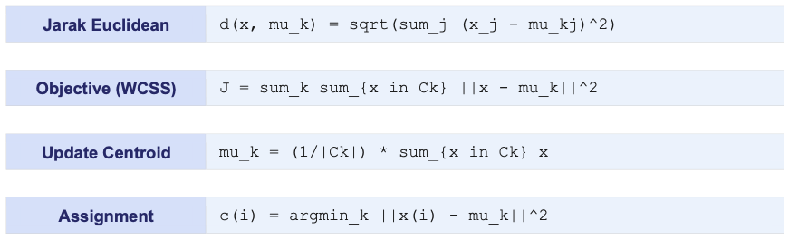
Kelebihan dan Kekurangan K-Means Clustering¶
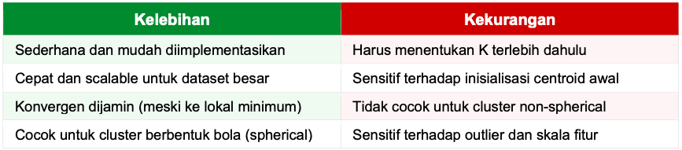
Contoh Kasus¶
Segmentasi pelanggan toko online berdasarkan total belanja dan frekuensi pembelian.
import numpy as np
import pandas as pd
import matplotlib.pyplot as plt
from sklearn.cluster import KMeans
from sklearn.preprocessing import StandardScaler
from sklearn.metrics import silhouette_score
np.random.seed(42)
n = 200
# Simulasi data pelanggan
data = pd.DataFrame({
'total_belanja_juta': np.concatenate([
np.random.normal(2,0.5,70), # segmen hemat
np.random.normal(8,1.0,80), # segmen menengah
np.random.normal(20,2.0,50) # segmen premium
]),
'frekuensi_bulan': np.concatenate([
np.random.normal(1,0.3,70),
np.random.normal(4,0.8,80),
np.random.normal(10,1.5,50)
])
})
# Scaling wajib untuk K-Means
scaler = StandardScaler()
X_scaled = scaler.fit_transform(data)
# Elbow Method: cari K optimal
wcss = []
silhouette = []
K_range = range(2, 9)
for k in K_range:
km = KMeans(n_clusters=k, init='k-means++',
n_init=10, random_state=42)
km.fit(X_scaled)
wcss.append(km.inertia_)
silhouette.append(silhouette_score(X_scaled, km.labels_))
print(f'K={k}: WCSS={km.inertia_:.2f}, Silhouette={silhouette[-1]:.4f}')
# Model final dengan K=3
km_final = KMeans(n_clusters=3, init='k-means++',
n_init=10, random_state=42)
data['cluster'] = km_final.fit_predict(X_scaled)
K=2: WCSS=68.68, Silhouette=0.7631 K=3: WCSS=16.06, Silhouette=0.7993 K=4: WCSS=10.67, Silhouette=0.7153 K=5: WCSS=8.68, Silhouette=0.7146 K=6: WCSS=6.95, Silhouette=0.5568 K=7: WCSS=5.95, Silhouette=0.5539 K=8: WCSS=5.23, Silhouette=0.5477
# Analisis profil cluster
print('Profil Cluster:\n', data.groupby('cluster').mean().round(2))
print('\nJumlah anggota per cluster:')
print(data['cluster'].value_counts().sort_index())
Profil Cluster:
total_belanja_juta frekuensi_bulan
cluster
0 7.96 4.05
1 20.17 10.27
2 1.93 1.01
Jumlah anggota per cluster:
cluster
0 80
1 50
2 70
Name: count, dtype: int64
Interpretasi Output K-Means¶
- WCSS (Inertia): semakin kecil semakin kompak cluster; gunakan Elbow Method untuk K optimal
- Silhouette Score (-1 hingga 1): nilai mendekati 1 = cluster terpisah dengan baik
- Profil centroid: rata-rata setiap fitur per cluster menggambarkan karakteristik segmen
Dalam kasus segmentasi pelanggan, 3 cluster biasanya menghasilkan: Cluster 0 (pelanggan hemat — belanja kecil, jarang)
Cluster 1 (pelanggan menengah), Cluster 2 (pelanggan premium — belanja besar, sering).
Informasi ini sangat berguna untuk strategi marketing yang dipersonalisasi.
Hierarchical Clustering¶
Hierarchical Clustering membangun hierarki cluster dalam bentuk pohon (dendrogram) tanpa perlu menentukan jumlah cluster di awal. Terdapat dua pendekatan utama:
- Agglomerative (bottom-up): mulai dari setiap titik sebagai cluster sendiri, lalu gabungkan dua cluster terdekat secara iteratif hingga semua menjadi satu cluster
- Divisive (top-down): mulai dari satu cluster besar, lalu pecah secara rekursif — lebih jarang digunakan
Dendrogram (diagram pohon) divisualisasikan untuk menentukan jumlah cluster optimal dengan memotong pohon pada ketinggian tertentu.
Dasar Matematis Hierarchical Clustering¶
Metrik jarak antar cluster (linkage):
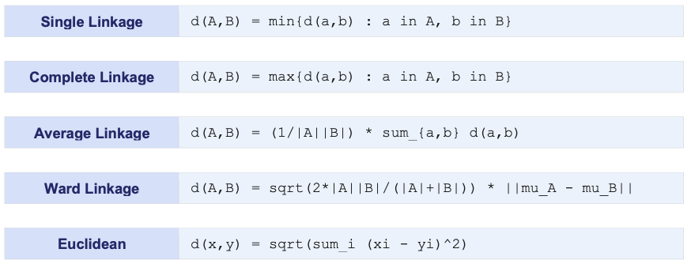
Keterangan:
Ward linkage meminimalkan total WCSS (variasi dalam cluster) — paling sering digunakan karena menghasilkan cluster yang kompak dan sama besar. Single linkage cenderung menghasilkan chain effect.
Kelebihan dan Kekurangan Hierarchical Clustering¶
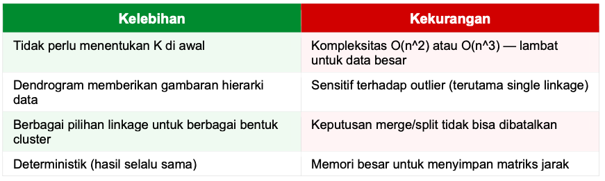
Contoh Kasus¶
Pengelompokan gen berdasarkan pola ekspresi untuk mengidentifikasi gen yang berfungsi serupa.
import numpy as np
import pandas as pd
from scipy.cluster.hierarchy import dendrogram, linkage, fcluster
from scipy.spatial.distance import pdist
from sklearn.preprocessing import StandardScaler
from sklearn.metrics import silhouette_score
np.random.seed(42)
# Simulasi: 30 gen, 6 kondisi eksperimen
n_genes = 30
gene_names = [f'Gen_{i+1}' for i in range(n_genes)]
# 3 pola ekspresi: upregulated, downregulated, stable
expr = np.vstack([
np.random.normal([3,3,3,1,1,1], 0.3, (10,6)), # upregulated awal
np.random.normal([1,1,1,3,3,3], 0.3, (10,6)), # upregulated akhir
np.random.normal([2,2,2,2,2,2], 0.3, (10,6)), # stabil
])
scaler = StandardScaler()
expr_scaled = scaler.fit_transform(expr)
# Hierarchical clustering dengan Ward linkage
Z = linkage(expr_scaled, method='ward', metric='euclidean')
# Potong dendrogram untuk 3 cluster
cluster_labels = fcluster(Z, t=3, criterion='maxclust')
# Evaluasi
sil = silhouette_score(expr_scaled, cluster_labels)
print(f'Silhouette Score: {sil:.4f}')
Silhouette Score: 0.6351
# Distribusi gen per cluster
df = pd.DataFrame({'gen': gene_names, 'cluster': cluster_labels})
print('\nDistribusi gen per cluster:')
print(df['cluster'].value_counts().sort_index())
Distribusi gen per cluster: cluster 1 10 2 10 3 10 Name: count, dtype: int64
# Profil ekspresi rata-rata per cluster
df_expr = pd.DataFrame(expr, columns=[f'Kondisi_{i+1}' for i in range(6)])
df_expr['cluster'] = cluster_labels
print('\nProfil ekspresi per cluster:')
print(df_expr.groupby('cluster').mean().round(2))
Profil ekspresi per cluster:
Kondisi_1 Kondisi_2 Kondisi_3 Kondisi_4 Kondisi_5 Kondisi_6
cluster
1 0.96 1.02 0.84 2.95 3.10 3.12
2 3.05 2.89 2.86 0.98 0.96 0.98
3 2.09 1.96 1.93 2.05 1.91 2.22
Interpretasi Output¶
- Sumbu Y (height): jarak/ketidakmiripan saat dua cluster digabungkan — makin tinggi, makin tidak mirip
- Pemotongan horizontal: garis potong pada ketinggian tertentu menentukan jumlah cluster
- Long vertical line: celah besar antar penggabungan menunjukkan cluster yang jelas-jelas terpisah
Ward linkage direkomendasikan untuk sebagian besar kasus karena menghasilkan cluster yang kompak. Hierarchical clustering sangat berguna di bioinformatika, analisis dokumen, dan segmentasi pasar di mana hierarki data memiliki makna kontekstual.
DBSCAN (Density-Based Spatial Clustering)¶
DBSCAN (Density-Based Spatial Clustering of Applications with Noise) adalah algoritma clustering berbasis densitas yang dapat menemukan cluster dengan bentuk arbitrary dan secara otomatis mengidentifikasi outlier (noise points).
Konsep kunci DBSCAN:
- Epsilon (eps): radius lingkungan (neighborhood radius) setiap titik
- MinPts: jumlah minimum titik dalam radius eps untuk membentuk region padat
- Core Point: titik dengan >= MinPts tetangga dalam radius eps
- Border Point: titik dalam radius eps dari core point tapi memiliki < MinPts tetangga
- Noise Point (Outlier): titik yang bukan core point dan bukan border point
Dasar Matematis DBSCAN¶
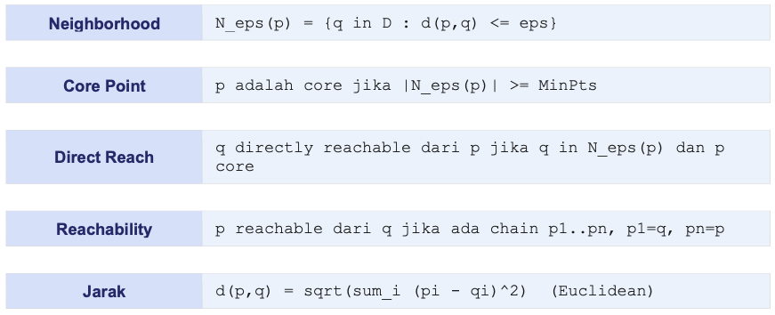
- Panduan memilih eps: gunakan k-distance graph yaitu plot jarak ke k-NN terdekat untuk setiap titik, urutkan, cari titik 'knee' (inflection point).
- Panduan MinPts: MinPts >= dimensi data + 1, minimal 3; lebih besar untuk data noisy.
Kelebihan dan Kekurangan DBSCAN¶
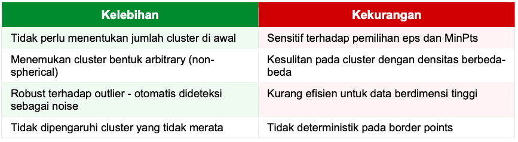
Contoh Kasus¶
Deteksi anomali dalam transaksi keuangan yaitu identifikasi transaksi mencurigakan (outlier) dari pola normal.
import numpy as np
import pandas as pd
from sklearn.cluster import DBSCAN
from sklearn.preprocessing import StandardScaler
from sklearn.metrics import silhouette_score
from sklearn.neighbors import NearestNeighbors
np.random.seed(42)
# Simulasi transaksi: jumlah (juta) dan jam transaksi
normal = np.column_stack([
np.random.normal(1.5, 0.5, 180), # jumlah normal
np.random.normal(12, 3, 180) # jam normal (siang)
])
# Transaksi mencurigakan: jumlah besar di jam ganjil
anomali = np.column_stack([
np.random.uniform(15, 50, 20), # jumlah sangat besar
np.random.uniform(1, 4, 20) # jam dini hari
])
X = np.vstack([normal, anomali])
scaler = StandardScaler()
X_scaled = scaler.fit_transform(X)
# Temukan eps optimal via k-distance
nn = NearestNeighbors(n_neighbors=5)
nn.fit(X_scaled)
distances, _ = nn.kneighbors(X_scaled)
k_dist = np.sort(distances[:, 4])[::-1]
# Titik knee sekitar eps=0.3-0.5 biasanya optimal
# DBSCAN
dbscan = DBSCAN(eps=0.5, min_samples=5)
labels = dbscan.fit_predict(X_scaled)
n_clusters = len(set(labels)) - (1 if -1 in labels else 0)
n_noise = list(labels).count(-1)
print(f'Jumlah cluster ditemukan : {n_clusters}')
print(f'Jumlah outlier (noise) : {n_noise}')
print(f'Total data : {len(labels)}')
Jumlah cluster ditemukan : 3 Jumlah outlier (noise) : 7 Total data : 200
df = pd.DataFrame(X, columns=['jumlah_juta', 'jam'])
df['label'] = labels
df['status'] = df['label'].map(
lambda x: 'ANOMALI' if x == -1 else f'Normal-Cluster{x}')
print('\nContoh transaksi anomali:')
print(df[df['label']==-1].head(10).round(2))
Contoh transaksi anomali:
jumlah_juta jam label status
29 1.35 23.56 -1 ANOMALI
82 2.24 2.28 -1 ANOMALI
184 25.00 1.14 -1 ANOMALI
186 22.83 3.85 -1 ANOMALI
188 15.43 2.37 -1 ANOMALI
190 16.51 1.83 -1 ANOMALI
194 17.58 2.75 -1 ANOMALI
Interpretasi Output¶
- Label -1: noise point / outlier — titik yang tidak masuk cluster manapun
- Label 0, 1, 2, ...: nomor cluster yang ditemukan secara otomatis
- Jumlah cluster tidak ditentukan — DBSCAN menemukannya sendiri berdasarkan densitas
DBSCAN sangat unggul untuk deteksi anomali dan clustering data spasial (peta, GPS). Berbeda dari K-Means, DBSCAN dapat menemukan cluster berbentuk spiral, cincin, atau bentuk apapun. Sangat berguna untuk fraud detection, analisis pola lalu lintas, dan data spasial geografis.
PCA (Principal Component Analysis)¶
PCA adalah teknik dimensionality reduction yang paling populer. PCA menemukan arah (principal components) di mana data memiliki variasi maksimum, kemudian memproyeksikan data ke subspace berdimensi lebih rendah sambil mempertahankan sebanyak mungkin informasi (variasi). PCA digunakan untuk:
- Dimensionality reduction: mengurangi jumlah fitur sebelum training model
- Visualisasi data: memproyeksikan data multidimensi ke 2D atau 3D
- Kompresi data: mengurangi ukuran data dengan kehilangan minimal
- Noise reduction: komponen dengan variasi kecil sering merupakan noise
Dasar Matematis PCA¶
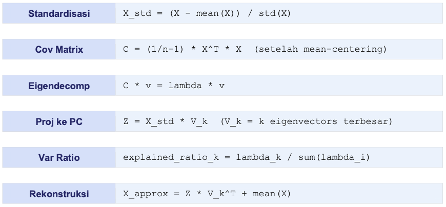
Keterangan:
- lambda = eigenvalue (besar variasi yang dijelaskan PC)
- v = eigenvector (arah PC)
- k = jumlah komponen yang dipilih.
Pilih k sehingga cumulative explained variance >= 95%.
Kelebihan dan Kekurangan PCA¶
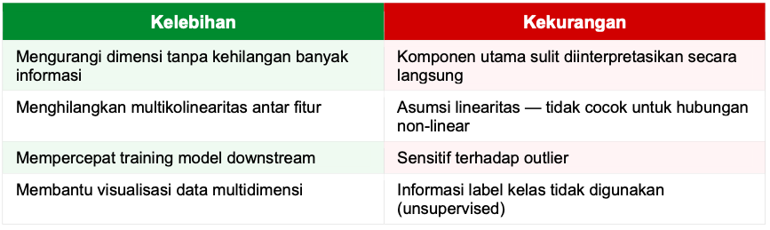
Contoh Kasus¶
Reduksi dimensi dataset wine (13 fitur kimia) untuk visualisasi dan clustering
import numpy as np
import pandas as pd
from sklearn.decomposition import PCA
from sklearn.preprocessing import StandardScaler
from sklearn.datasets import load_wine
# Load dataset wine: 178 sampel, 13 fitur kimia
wine = load_wine()
X = wine.data
y = wine.target # hanya untuk evaluasi visual
feature_names = wine.feature_names
# Scaling wajib sebelum PCA
scaler = StandardScaler()
X_scaled = scaler.fit_transform(X)
# PCA: lihat semua komponen dulu
pca_full = PCA()
pca_full.fit(X_scaled)
PCA()In a Jupyter environment, please rerun this cell to show the HTML representation or trust the notebook.
On GitHub, the HTML representation is unable to render, please try loading this page with nbviewer.org.
Parameters
print('Explained Variance Ratio per komponen:')
cum_var = 0
for i, var in enumerate(pca_full.explained_variance_ratio_):
cum_var += var
print(f' PC{i+1:2d}: {var:.4f} ({cum_var:.4f} kumulatif)')
if cum_var >= 0.95:
print(f' --> {i+1} komponen menjelaskan 95% variasi')
break
Explained Variance Ratio per komponen: PC 1: 0.3620 (0.3620 kumulatif) PC 2: 0.1921 (0.5541 kumulatif) PC 3: 0.1112 (0.6653 kumulatif) PC 4: 0.0707 (0.7360 kumulatif) PC 5: 0.0656 (0.8016 kumulatif) PC 6: 0.0494 (0.8510 kumulatif) PC 7: 0.0424 (0.8934 kumulatif) PC 8: 0.0268 (0.9202 kumulatif) PC 9: 0.0222 (0.9424 kumulatif) PC10: 0.0193 (0.9617 kumulatif) --> 10 komponen menjelaskan 95% variasi
# Reduksi ke 2 komponen untuk visualisasi
pca_2d = PCA(n_components=2)
X_pca = pca_2d.fit_transform(X_scaled)
print(f'\nShape asal : {X_scaled.shape}')
print(f'Shape PCA 2D: {X_pca.shape}')
print(f'Variasi dijelaskan: {pca_2d.explained_variance_ratio_.sum():.4f}')
Shape asal : (178, 13) Shape PCA 2D: (178, 2) Variasi dijelaskan: 0.5541
# Loading matrix: kontribusi fitur asli ke PC
loadings = pd.DataFrame(
pca_2d.components_.T,
index=feature_names,
columns=['PC1', 'PC2']
)
print('\nLoading Matrix (kontribusi fitur ke PC):')
print(loadings.round(3))
# PCA untuk reduksi 95% variasi
pca_95 = PCA(n_components=0.95)
X_95 = pca_95.fit_transform(X_scaled)
print(f'\nKomponen untuk 95% variasi: {pca_95.n_components_}')
Loading Matrix (kontribusi fitur ke PC):
PC1 PC2
alcohol 0.144 0.484
malic_acid -0.245 0.225
ash -0.002 0.316
alcalinity_of_ash -0.239 -0.011
magnesium 0.142 0.300
total_phenols 0.395 0.065
flavanoids 0.423 -0.003
nonflavanoid_phenols -0.299 0.029
proanthocyanins 0.313 0.039
color_intensity -0.089 0.530
hue 0.297 -0.279
od280/od315_of_diluted_wines 0.376 -0.164
proline 0.287 0.365
Komponen untuk 95% variasi: 10
Interpretasi Output¶
- PC1: arah variasi terbesar dalam data — kombinasi linier fitur asli
- Explained variance ratio: proporsi informasi yang dibawa setiap PC
- Loading matrix: nilai besar (absolut) = fitur tersebut sangat berkontribusi pada PC
- Scree plot: grafik eigenvalue vs PC — cari 'elbow' untuk K optimal
PCA adalah preprocessing standar sebelum clustering atau visualisasi. Dengan loading matrix, kita bisa memahami PC1 mewakili kombinasi fitur apa — misalnya 'keasaman overall' atau 'kandungan alkohol+tannin'. Untuk hubungan non-linear, gunakan t-SNE atau UMAP sebagai alternatif.
t-SNE (t-Distributed Stochastic Neighbor Embedding)¶
t-SNE adalah teknik dimensionality reduction non-linear yang sangat efektif untuk visualisasi data berdimensi tinggi. t-SNE mempertahankan struktur lokal data — titik yang berdekatan di ruang berdimensi tinggi akan tetap berdekatan di representasi 2D/3D.
t-SNE sering digunakan untuk:
- Visualisasi embedding dari Neural Network (layer terakhir)
- Eksplorasi cluster dalam data genomik / bioinformatika
- Visualisasi representasi teks dari model NLP
- Analisis dataset gambar berdimensi tinggi
Penting: t-SNE hanya cocok untuk VISUALISASI, bukan untuk preprocessing atau reduksi dimensi sebelum modeling.
Dasar Matematis t-SNE¶
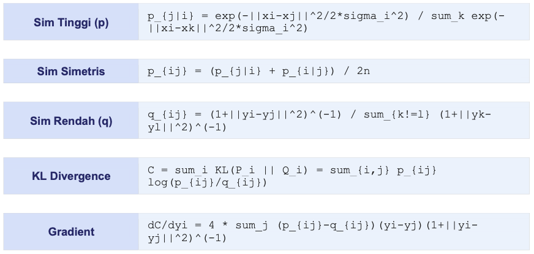
Keterangan:
- p_{ij} = similaritas di ruang tinggi (Gaussian)
- q_{ij} = similaritas di ruang rendah (Student-t distribution)
- perplexity = kontrol keseimbangan lokal vs global (biasanya 5-50).
t-distribution digunakan agar cluster terpisah lebih jauh.
Kelebihan dan Kekurangan t-SNE¶
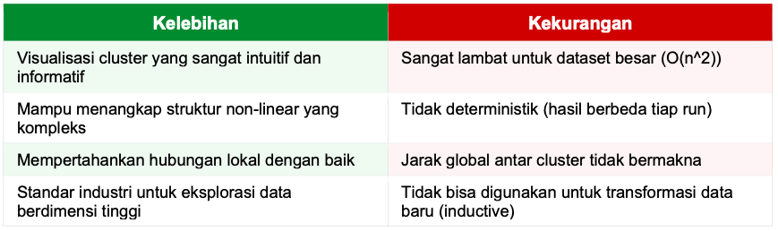
Contoh Kasus¶
Kasus: Visualisasi digit MNIST 784-dimensi ke 2D untuk melihat apakah digit yang sama membentuk cluster.
import numpy as np
from sklearn.manifold import TSNE
from sklearn.datasets import load_digits
from sklearn.preprocessing import StandardScaler
from sklearn.decomposition import PCA
# Load Digits dataset (1797 gambar 8x8 = 64 dimensi)
digits = load_digits()
X = digits.data # (1797, 64)
y = digits.target # label 0-9
# Rekomendasi: PCA dulu ke 50D sebelum t-SNE (lebih cepat)
scaler = StandardScaler()
X_scaled = scaler.fit_transform(X)
pca50 = PCA(n_components=50)
X_pca50 = pca50.fit_transform(X_scaled)
print(f'Setelah PCA 50: {X_pca50.shape}')
Setelah PCA 50: (1797, 50)
# t-SNE ke 2D
tsne = TSNE(
n_components=2,
perplexity=30, # biasanya 5-50
learning_rate=200, # biasanya 10-1000
random_state=42,
init='pca' # inisialisasi dengan PCA lebih stabil
)
X_tsne = tsne.fit_transform(X_pca50)
print(f'Shape t-SNE output: {X_tsne.shape}')
print(f'KL Divergence akhir: {tsne.kl_divergence_:.4f}')
Shape t-SNE output: (1797, 2) KL Divergence akhir: 0.8202
# Analisis separabilitas cluster
import pandas as pd
df = pd.DataFrame({
'x': X_tsne[:,0], 'y': X_tsne[:,1], 'digit': y
})
print('\nRentang koordinat per digit (contoh digit 0 vs 1):')
for d in [0, 1, 2]:
sub = df[df['digit']==d]
print(f' Digit {d}: x=[{sub.x.min():.1f},{sub.x.max():.1f}]',
f'y=[{sub.y.min():.1f},{sub.y.max():.1f}]')
# Untuk visualisasi: plt.scatter(X_tsne[:,0], X_tsne[:,1], c=y, cmap='tab10')
Rentang koordinat per digit (contoh digit 0 vs 1): Digit 0: x=[-46.8,-28.0] y=[-47.2,-29.7] Digit 1: x=[-26.4,28.6] y=[-39.2,8.4] Digit 2: x=[-55.4,40.5] y=[-39.5,24.3]
Interpretasi Output¶
- Cluster yang terpisah = data memiliki struktur yang berbeda di ruang asli
- Jarak ANTAR cluster tidak bermakna secara kuantitatif
- Ukuran cluster tidak mencerminkan jumlah data
- Perplexity rendah: struktur lokal; Perplexity tinggi: struktur global
- Selalu jalankan beberapa kali dengan random_state berbeda untuk verifikasi
t-SNE sangat berguna untuk eksplorasi awal data — jika digit-digit yang sama membentuk cluster terpisah, artinya model sudah belajar representasi yang bermakna. Untuk dataset > 10.000 titik, gunakan UMAP sebagai alternatif yang jauh lebih cepat.
Autoencoder¶
Autoencoder adalah jenis Neural Network yang dilatih untuk merekonstruksi inputnya sendiri. Arsitekturnya terdiri dari dua bagian:
- Encoder: mengompres input x ke representasi laten z (dimensi lebih kecil)
- Decoder: merekonstruksi input dari representasi laten x_hat = g(z)
Karena bottleneck (lapisan tengah berdimensi kecil), jaringan dipaksa mempelajari representasi yang paling penting (fitur esensial) dari data. Varian Autoencoder:
- Variational Autoencoder (VAE): z adalah distribusi probabilistik — bisa generate data baru
- Denoising Autoencoder: dilatih menghilangkan noise dari input
- Sparse Autoencoder: representasi laten yang sparse melalui regularisasi
Dasar Matematis Autoencoder¶
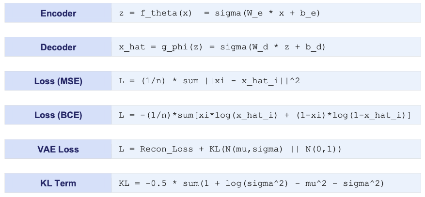
Keterangan:
- z = latent space (bottleneck)
- theta/phi = parameter encoder/decoder
- KL = Kullback-Leibler divergence yang mendorong distribusi laten mendekati Gaussian standar pada VAE.
Kelebihan dan Kekurangan Autoencoder¶
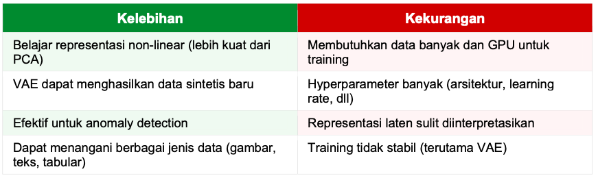
Contoh Kasus¶
Anomaly detection pada data sensor mesin industri yaitu mesin normal menghasilkan rekonstruksi error kecil, mesin bermasalah menghasilkan error besar.
Code berikut kusus untuk python versi < 9.13
import numpy as np
import pandas as pd
from tensorflow import keras
from tensorflow.keras import layers
from sklearn.preprocessing import MinMaxScaler
from sklearn.metrics import roc_auc_scor
np.random.seed(42)
# Data sensor: 5 sensor, pola normal
n_normal = 1000
n_anomaly = 50
n_features = 5
normal_data = np.random.normal(0, 1, (n_normal, n_features))
anomaly_data = np.random.normal(5, 2, (n_anomaly, n_features)) # shift besar
scaler = MinMaxScaler()
X_normal = scaler.fit_transform(normal_data)
X_anomaly = scaler.transform(anomaly_data)
# Arsitektur Autoencoder
encoding_dim = 2 # bottleneck: 5 -> 2 -> 5
input_layer = keras.Input(shape=(n_features,))
encoded = layers.Dense(4, activation='relu')(input_layer)
bottleneck = layers.Dense(encoding_dim, activation='relu')(encoded)
decoded = layers.Dense(4, activation='relu')(bottleneck)
output_layer = layers.Dense(n_features, activation='sigmoid')(decoded)
autoencoder = keras.Model(input_layer, output_layer)
autoencoder.compile(optimizer='adam', loss='mse')
# Training HANYA dengan data normal
autoencoder.fit(
X_normal, X_normal, # input = output
epochs=50, batch_size=32,
validation_split=0.1, verbose=0)
# Rekonstruksi error sebagai anomaly score
X_all = np.vstack([X_normal, X_anomaly])
X_reconstructed = autoencoder.predict(X_all, verbose=0)
recon_error = np.mean((X_all - X_reconstructed)**2, axis=1)
labels = np.array([0]*n_normal + [1]*n_anomaly)
auc = roc_auc_score(labels, recon_error)
print(f'AUC-ROC (anomaly detection): {auc:.4f}')
threshold = np.percentile(recon_error[:n_normal], 95)
predictions = (recon_error > threshold).astype(int)
n_detected = predictions[n_normal:].sum()
print(f'Threshold (95-pct): {threshold:.4f}')
print(f'Anomali terdeteksi: {n_detected}/{n_anomaly}')
Interpretasi Output¶
- Error rendah: input mirip dengan pola training (normal) → model bisa merekonstruksi dengan baik
- Error tinggi: input tidak biasa (anomali) → model gagal merekonstruksi dengan akurat
- Threshold: biasanya percentile ke-95 atau ke-99 dari error data normal
Autoencoder sangat cocok untuk anomaly detection tanpa label karena hanya butuh data normal saat training. Digunakan luas di deteksi fraud, pemantauan mesin, kontrol kualitas manufaktur, dan deteksi intrusi jaringan. Untuk generasi data, gunakan VAE atau GAN yang merupakan evolusi dari Autoencoder standar.
Gaussian Mixture Model (GMM)¶
GMM adalah model probabilistik yang mengasumsikan data dihasilkan dari campuran beberapa distribusi Gaussian. Berbeda dari K-Means yang menghasilkan assignment hard (satu titik = satu cluster), GMM menghasilkan assignment soft — setiap titik memiliki probabilitas untuk menjadi anggota setiap cluster.
GMM lebih fleksibel dari K-Means karena:
- Bisa memodelkan cluster dengan bentuk elliptical (tidak hanya spherical)
- Setiap cluster memiliki kovarians sendiri (full, tied, diag, atau spherical)
- Output berupa probabilitas keanggotaan — mengekspresikan ketidakpastian
- Dapat digunakan sebagai generative model untuk sampling data baru
Dasar Matematis GMM¶
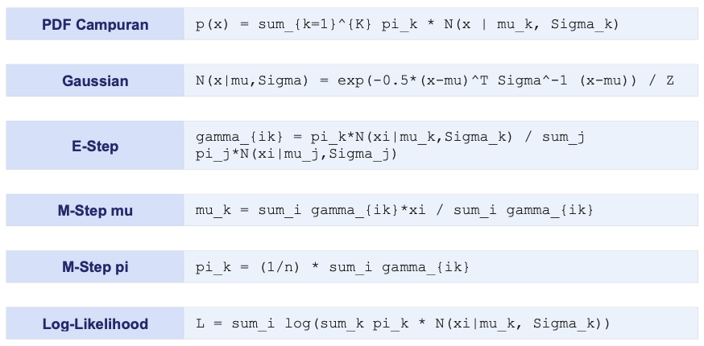
Keterangan:
- pi_k = mixing coefficient (bobot komponen k)
- gamma_{ik} = posterior probability titik i ke komponen k
EM algorithm digunakan untuk optimasi dalam GMM konsep optimasinya yaitu bergantian antara E-step (hitung gamma) dan M-step (update parameter).
Kelebihan dan Kekurangan GMM¶
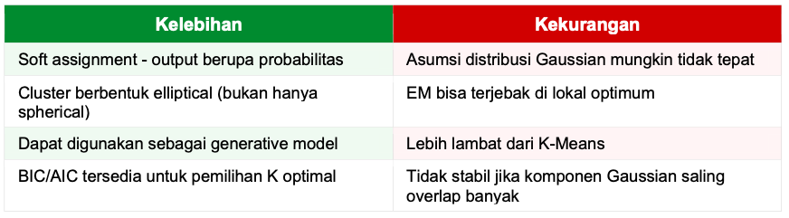
Contoh Kasus¶
Analisis pola penjualan produk yaitu identifikasi pola penjualan dari data multivariat dengan ketidakpastian keanggotaan cluster.
import numpy as np
import pandas as pd
from sklearn.mixture import GaussianMixture
from sklearn.preprocessing import StandardScaler
np.random.seed(42)
# Simulasi data penjualan: [harga_ribu, volume_unit]
cluster1 = np.random.multivariate_normal(
[50, 200], [[100,20],[20,400]], 100) # produk murah-volume tinggi
cluster2 = np.random.multivariate_normal(
[150, 80], [[200,10],[10,100]], 80) # produk menengah
cluster3 = np.random.multivariate_normal(
[400, 20], [[500,-30],[-30,50]], 60) # produk premium-volume rendah
X = np.vstack([cluster1, cluster2, cluster3])
scaler = StandardScaler()
X_scaled = scaler.fit_transform(X)
# Pilih K optimal via BIC
bic_scores = []
aic_scores = []
K_range = range(1, 8)
for k in K_range:
gmm = GaussianMixture(n_components=k, n_init=5, random_state=42)
gmm.fit(X_scaled)
bic_scores.append(gmm.bic(X_scaled))
aic_scores.append(gmm.aic(X_scaled))
print(f'K={k}: BIC={bic_scores[-1]:.2f}, AIC={aic_scores[-1]:.2f}')
best_k = K_range[np.argmin(bic_scores)]
print(f'\nK optimal (BIC): {best_k}')
K=1: BIC=1026.73, AIC=1009.33 K=2: BIC=310.05, AIC=271.76 K=3: BIC=-48.17, AIC=-107.34 K=4: BIC=-29.18, AIC=-109.23 K=5: BIC=-1.20, AIC=-102.14 K=6: BIC=22.70, AIC=-99.12 K=7: BIC=53.21, AIC=-89.49 K optimal (BIC): 3
# Model final
gmm_final = GaussianMixture(n_components=best_k, n_init=10,
covariance_type='full', random_state=42)
gmm_final.fit(X_scaled)
GaussianMixture(n_components=3, n_init=10, random_state=42)In a Jupyter environment, please rerun this cell to show the HTML representation or trust the notebook.
On GitHub, the HTML representation is unable to render, please try loading this page with nbviewer.org.
Parameters
# Soft assignment: probabilitas keanggotaan
proba = gmm_final.predict_proba(X_scaled)
labels = gmm_final.predict(X_scaled)
df = pd.DataFrame(X, columns=['harga_ribu','volume'])
df['cluster'] = labels
for k in range(best_k):
df[f'prob_cluster{k}'] = proba[:,k]
print('\nProfil cluster:')
print(df.groupby('cluster')[['harga_ribu','volume']].mean().round(1))
# Titik yang tidak yakin (probabilitas tertinggi < 0.8)
max_proba = proba.max(axis=1)
n_uncertain = (max_proba < 0.8).sum()
print(f'\nTitik tidak pasti: {n_uncertain}')
Profil cluster:
harga_ribu volume
cluster
0 50.2 197.7
1 398.5 20.5
2 148.3 79.7
Titik tidak pasti: 0
Interpretasi Output¶
- Probabilitas keanggotaan: titik dengan prob 0.95 di cluster A sangat yakin; titik dengan prob 0.55 masih ambigu
- BIC (Bayesian Information Criterion): pilih K dengan BIC terkecil — menyeimbangkan goodness of fit dan kompleksitas
- AIC: cenderung memilih K lebih banyak dari BIC; gunakan BIC untuk model lebih parsimonious
GMM unggul dari K-Means untuk data yang cluster-nya tumpang tindih atau berbentuk elliptical. Dalam bisnis, titik dengan probabilitas campuran tinggi (misal 60%-40%) adalah pelanggan yang berada di batas antara dua segmen — target menarik untuk strategi pemasaran transisi.
LDA (Latent Dirichlet Allocation)¶
LDA adalah model generatif probabilistik untuk menemukan topik tersembunyi (latent topics) dalam koleksi dokumen teks. LDA mengasumsikan setiap dokumen adalah campuran dari beberapa topik, dan setiap topik adalah distribusi probabilistik atas kata-kata.
Asumsi generatif LDA:
- Setiap dokumen memiliki distribusi atas K topik (theta)
- Setiap topik memiliki distribusi atas V kata (phi)
- Setiap kata dalam dokumen dihasilkan dengan memilih topik dari theta, lalu memilih kata dari topik tersebut
LDA termasuk unsupervised karena topik-topik ditemukan secara otomatis tanpa label.
Dasar Matematis LDA¶
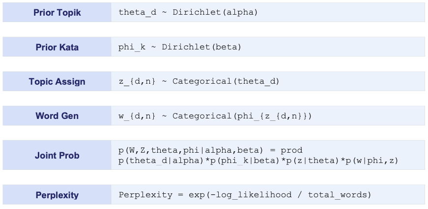
Keterangan:
- alpha = hyperparameter Dirichlet untuk distribusi topik per dokumen (alpha kecil = dokumen fokus di sedikit topik)
- beta = hyperparameter untuk distribusi kata per topik
- K = jumlah topik (dipilih user).
Inferensi menggunakan Variational Bayes atau Gibbs Sampling.
Kelebihan dan Kekurangan LDA¶
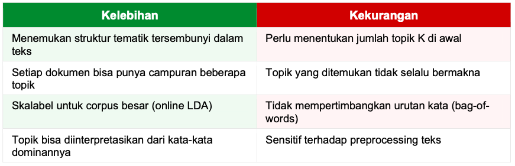
Contoh Kasus¶
Topic modeling pada kumpulan artikel berita untuk menemukan tema-tema utama secara otomatis.
import numpy as np
from sklearn.decomposition import LatentDirichletAllocation
from sklearn.feature_extraction.text import CountVectorizer
# Contoh dokumen teks (dalam implementasi nyata, gunakan corpus besar)
documents = [
'bank interest rate loan mortgage finance',
'stock market shares investment portfolio',
'football soccer player goal match team',
'basketball player dunk score championship',
'machine learning neural network deep model',
'algorithm data feature training prediction',
'interest loan credit bank payment finance',
'player team win championship tournament',
'deep learning model training data neural',
'market shares dividend portfolio investor',
'goal match player football team league',
'feature selection model accuracy training',
]
# Preprocessing: Bag of Words
vectorizer = CountVectorizer(
max_df=0.95, min_df=1,
stop_words='english')
X_bow = vectorizer.fit_transform(documents)
vocab = vectorizer.get_feature_names_out()
print(f'Vocabulary size: {len(vocab)}')
print(f'Document-term matrix: {X_bow.shape}')
Vocabulary size: 40 Document-term matrix: (12, 40)
# LDA dengan K=3 topik
lda = LatentDirichletAllocation(
n_components=3,
max_iter=20,
learning_method='batch',
random_state=42)
lda.fit(X_bow)
LatentDirichletAllocation(max_iter=20, n_components=3, random_state=42)In a Jupyter environment, please rerun this cell to show the HTML representation or trust the notebook.
On GitHub, the HTML representation is unable to render, please try loading this page with nbviewer.org.
Parameters
# Tampilkan kata-kata top per topik
print('\n=== Topik yang Ditemukan ===')
for topic_idx, topic in enumerate(lda.components_):
top_words_idx = topic.argsort()[-8:][::-1]
top_words = [vocab[i] for i in top_words_idx]
print(f'Topik {topic_idx+1}: {', '.join(top_words)}')
=== Topik yang Ditemukan === Topik 1: finance, bank, loan, shares, portfolio, market, championship, credit Topik 2: training, feature, data, model, prediction, algorithm, accuracy, selection Topik 3: player, team, match, goal, football, learning, deep, neural
# Distribusi topik per dokumen
doc_topics = lda.transform(X_bow)
print('\nDistribusi topik per dokumen (3 dokumen pertama):')
for i in range(3):
print(f'Doc {i+1}: {doc_topics[i].round(3)}')
print(f'\nPerplexity: {lda.perplexity(X_bow):.2f}')
Distribusi topik per dokumen (3 dokumen pertama): Doc 1: [0.888 0.056 0.056] Doc 2: [0.067 0.056 0.877] Doc 3: [0.049 0.048 0.903] Perplexity: 75.51
Interpretasi Output¶
- Kata-kata dengan probabilitas tertinggi mendefinisikan topik — beri nama secara manual
- Topik 1 (finance, bank, interest) = Topik Keuangan
- Topik 2 (football, player, team) = Topik Olahraga
- Topik 3 (learning, model, data) = Topik Teknologi AI
Perplexity lebih rendah = model lebih baik fit data, namun terlalu rendah bisa berarti overfitting (K terlalu besar). Gunakan coherence score (via gensim) untuk evaluasi kualitas topik yang lebih bermakna. LDA sangat berguna untuk analisis konten media sosial, review produk, dan manajemen pengetahuan.
ICA (Independent Component Analysis)¶
ICA adalah teknik yang memisahkan sinyal campuran menjadi komponen-komponen yang statistik independen satu sama lain. ICA sering digunakan untuk memecahkan masalah 'Blind Source Separation' — memisahkan sinyal asli dari campurannya tanpa mengetahui sumber atau proses pencampurannya.
Contoh klasik 'Cocktail Party Problem': di sebuah pesta, beberapa mikrofon merekam campuran suara dari beberapa pembicara. ICA dapat memisahkan suara masing-masing pembicara hanya dari rekaman campuran.
Perbedaan dengan PCA:
- PCA mencari komponen yang TIDAK BERKORELASI (orthogonal)
- ICA mencari komponen yang INDEPENDEN secara statistik (lebih kuat dari sekedar tidak berkorelasi)
- ICA mengasumsikan distribusi non-Gaussian (PCA tidak)
Dasar Matematis ICA¶
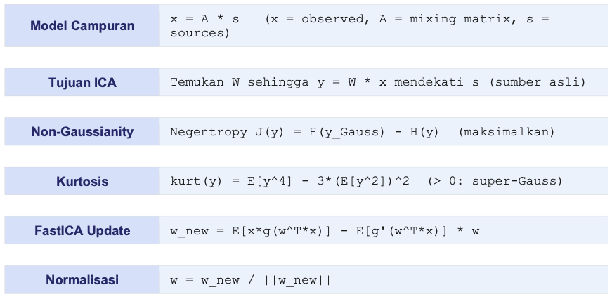
Keterangan:
- A = mixing matrix (tidak diketahui)
- W = separating matrix (yang dicari)
- g = non-linear contrast function (tanh, x^3, exp).
FastICA adalah algoritma yang paling umum digunakan untuk ICA, bekerja dengan memaksimalkan non-Gaussianity tiap komponen.
Kelebihan dan Kekurangan ICA¶
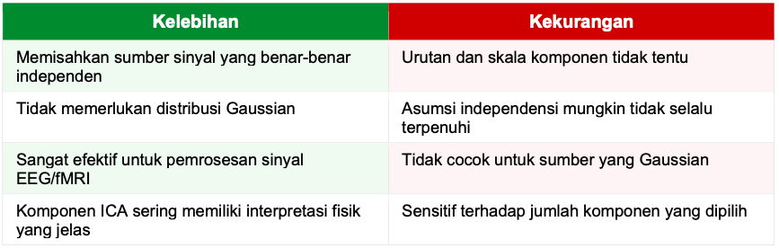
Contoh Kasus¶
Pemisahan sinyal EEG yaitu memisahkan aktivitas otak (alpha, beta waves) dari artefak gerakan mata.
import numpy as np
from sklearn.decomposition import FastICA, PCA
np.random.seed(42)
n_samples = 2000
t = np.linspace(0, 8, n_samples)
# Sinyal sumber independen (simulasi EEG)
s1 = np.sin(2 * t) # gelombang alpha (otak)
s2 = np.sign(np.sin(3 * t)) # gelombang beta (otak)
s3 = np.random.laplace(0,1,n_samples) # artefak noise
S = np.c_[s1, s2, s3] # (2000, 3) — sumber asli
S = S / S.std(axis=0) # normalisasi
# Matriks pencampuran (simulasi sensor EEG)
A = np.array([[1, 1, 1],
[0.5, 2, 1],
[1.5, 1, 2]])
X = S @ A.T # sinyal terukur (campuran)
print(f'Shape sinyal terukur X: {X.shape}')
Shape sinyal terukur X: (2000, 3)
# ICA untuk memisahkan sumber
ica = FastICA(n_components=3, random_state=42, max_iter=500)
S_ica = ica.fit_transform(X) # sinyal yang dipisahkan
# Bandingkan korelasi antara sumber asli dan hasil ICA
print('\nKorelasi sinyal asli vs hasil ICA:')
for i in range(3):
corrs = [abs(np.corrcoef(S[:,i], S_ica[:,j])[0,1]) for j in range(3)]
best_j = np.argmax(corrs)
print(f' Sumber {i+1} <-> ICA Comp {best_j+1}: corr={corrs[best_j]:.4f}')
Korelasi sinyal asli vs hasil ICA: Sumber 1 <-> ICA Comp 1: corr=0.9981 Sumber 2 <-> ICA Comp 2: corr=0.9994 Sumber 3 <-> ICA Comp 3: corr=0.9996
# Bandingkan dengan PCA
pca = PCA(n_components=3)
S_pca = pca.fit_transform(X)
print('\nInfo: PCA hanya dekorelasi, ICA mencapai independensi penuh')
print(f'ICA mixing matrix shape: {ica.mixing_.shape}')
Info: PCA hanya dekorelasi, ICA mencapai independensi penuh ICA mixing matrix shape: (3, 3)
Interpretasi Output¶
- Korelasi tinggi antara komponen ICA dan sumber asli = pemisahan berhasil
- Komponen ICA bisa diidentifikasi secara manual: mana yang sinyal otak, mana artefak
- Mixing matrix A^(-1) = W menunjukkan kontribusi tiap sumber ke tiap sensor
ICA sangat berguna di neurosains (analisis EEG/fMRI), pemrosesan audio, dan keuangan (memisahkan faktor pasar). Berbeda dari PCA yang hanya menghasilkan komponen tak berkorelasi, ICA menghasilkan komponen yang benar-benar independen secara statistik — lebih kuat untuk interpretasi fisik sinyal.
Self-Organizing Map (SOM)¶
SOM (atau Kohonen Map) adalah jenis Neural Network unsupervised yang menghasilkan representasi diskrit berdimensi rendah (biasanya 2D grid) dari data berdimensi tinggi, dengan mempertahankan hubungan topologi antar data (titik yang berdekatan di data asli tetap berdekatan di peta 2D).
SOM terdiri dari grid neuron (misalnya 10x10 = 100 neuron), di mana setiap neuron memiliki vektor bobot yang sama dimensinya dengan data input. Proses training:
- Untuk setiap data input, temukan Best Matching Unit (BMU) — neuron terdekat
- Perbarui bobot BMU dan tetangganya agar lebih mirip dengan input
- Secara bertahap, radius neighborhood mengecil (neighborhood decay)
Dasar Matematis SOM¶
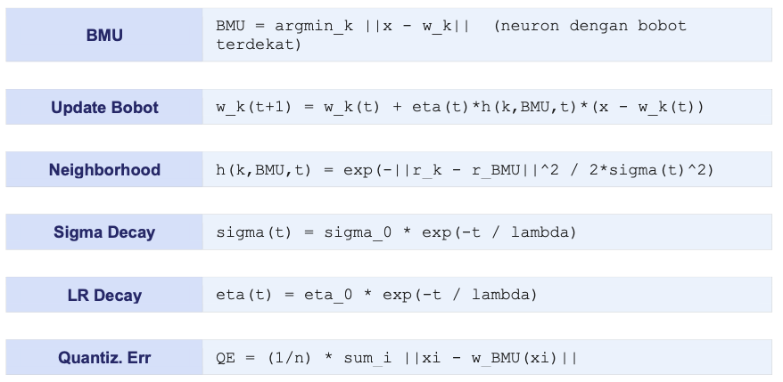
Keterangan:
- w_k = vektor bobot neuron k
- r_k = posisi neuron k di grid
- eta = learning rate
- sigma = radius neighborhood
- t = iterasi
- lambda = time constant.
Quantization error mengukur seberapa baik SOM merepresentasikan data.
Kelebihan dan Kekurangan SOM¶
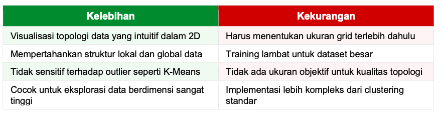
Contoh Kasus¶
Visualisasi dan clustering data nasabah bank berdasarkan 4 fitur finansial pada peta 2D
import numpy as np
from sklearn.preprocessing import MinMaxScaler
# Simulasi menggunakan numpy (tanpa library eksternal)
np.random.seed(42)
# Data: [pendapatan, tabungan, umur, skor_kredit]
n = 300
X = np.column_stack([
np.random.uniform(2, 50, n), # pendapatan juta
np.random.uniform(0, 100, n), # tabungan juta
np.random.randint(20, 70, n), # umur
np.random.randint(300, 850, n) # skor kredit
])
# Normalisasi ke [0,1]
scaler = MinMaxScaler()
X_scaled = scaler.fit_transform(X)
# Simulasi SOM sederhana (10x10 grid)
grid_size = 10
n_features = X_scaled.shape[1]
weights = np.random.rand(grid_size, grid_size, n_features)
def find_bmu(x, weights):
diff = weights - x
dist = np.sqrt((diff**2).sum(axis=2))
return np.unravel_index(dist.argmin(), dist.shape)
# Training SOM
n_iter = 1000
for t in range(n_iter):
idx = np.random.randint(0, len(X_scaled))
x = X_scaled[idx]
bmu = find_bmu(x, weights)
eta = 0.5 * np.exp(-t/500)
sigma = 3.0 * np.exp(-t/500)
for i in range(grid_size):
for j in range(grid_size):
dist_grid = np.sqrt((i-bmu[0])**2 + (j-bmu[1])**2)
h = np.exp(-dist_grid**2 / (2*sigma**2))
weights[i,j] += eta * h * (x - weights[i,j])
# Mapping data ke SOM
bmu_indices = [find_bmu(x, weights) for x in X_scaled]
# Hitung Quantization Error
qe = np.mean([np.linalg.norm(X_scaled[i] - weights[b[0],b[1]])
for i, b in enumerate(bmu_indices)])
print(f'Quantization Error: {qe:.4f}')
# Distribusi data di grid
freq_map = np.zeros((grid_size, grid_size))
for bmu in bmu_indices:
freq_map[bmu[0], bmu[1]] += 1
print(f'Grid aktif: {(freq_map>0).sum()} dari {grid_size**2} neuron')
print(f'BMU paling padat: {int(freq_map.max())} data')
Quantization Error: 0.1950 Grid aktif: 92 dari 100 neuron BMU paling padat: 10 data
Interpretasi Output¶
- U-Matrix (Unified Distance Matrix): menampilkan jarak rata-rata antara neuron dan tetangganya yaitu warna gelap = batas cluster, warna terang = pusat cluster
- Hit map: frekuensi setiap neuron terpilih sebagai BMU yaitu menunjukkan kepadatan data
- Component planes: visualisasi nilai setiap fitur di seluruh grid
SOM sangat berguna untuk eksplorasi data berdimensi tinggi secara visual. Digunakan luas di analisis bioinformatika, pemrosesan sinyal, segmentasi pasar, dan analisis data geospatial. Untuk implementasi yang lebih lengkap dan cepat, gunakan library minisom yang tersedia di pip.
UMAP (Uniform Manifold Approximation and Projection)¶
UMAP adalah algoritma dimensionality reduction non-linear modern yang lebih cepat dari t-SNE dan lebih baik dalam mempertahankan struktur global data. UMAP didasarkan pada teori topologi aljabar dan geometri Riemannian.
Keunggulan UMAP dibanding t-SNE:
- Jauh lebih cepat (10-100x lebih cepat dari t-SNE untuk dataset besar)
- Dapat digunakan untuk transformasi data baru (inductive/transform mode)
- Lebih baik dalam mempertahankan struktur global antar cluster
- Cocok untuk preprocessing sebelum clustering atau classification
UMAP digunakan di single-cell genomics, NLP embedding visualization, dan analisis data berdimensi sangat tinggi.
Dasar Matematis UMAP¶
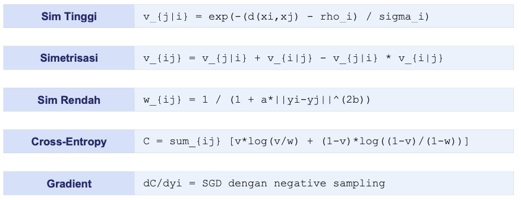
Keterangan:
- rho_i = jarak ke tetangga terdekat titik i
- sigma_i = normalisasi bandwidth
- a dan b = parameter yang menentukan bentuk kurva similarity di ruang rendah (diatur via min_dist)
- n_neighbors = jumlah tetangga lokal yang dipertimbangkan (mengontrol balance lokal vs global)
Kelebihan dan Kekurangan UMAP¶
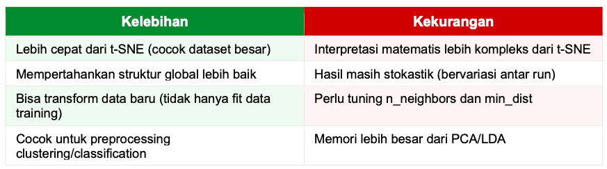
Contoh Kasus¶
Visualisasi dan reduksi dimensi dataset fashion MNIST untuk eksplorasi cluster jenis pakaian.
import numpy as np
from sklearn.datasets import load_digits
from sklearn.preprocessing import StandardScaler
import pandas as pd
# Install: pip install umap-learn
# import umap
# Demonstrasi dengan Digits dataset
digits = load_digits()
X = digits.data # (1797, 64)
y = digits.target
scaler = StandardScaler()
X_scaled = scaler.fit_transform(X)
# Kode UMAP (jalankan setelah install umap-learn)
# reducer = umap.UMAP(
# n_components=2,
# n_neighbors=15, # balance lokal vs global
# min_dist=0.1, # jarak minimum di ruang rendah
# metric='euclidean',
# random_state=42
# )
# X_umap = reducer.fit_transform(X_scaled)
# Simulasi hasil (tanpa library umap)
from sklearn.manifold import TSNE
from sklearn.decomposition import PCA
# Step 1: PCA dulu ke 30 dimensi
pca = PCA(n_components=30)
X_pca = pca.fit_transform(X_scaled)
print(f'PCA variance explained: {pca.explained_variance_ratio_.sum():.4f}')
PCA variance explained: 0.8932
# Step 2: t-SNE (sebagai fallback jika UMAP tidak tersedia)
tsne = TSNE(n_components=2, perplexity=30, random_state=42, init='pca')
X_2d = tsne.fit_transform(X_pca)
# Analisis separabilitas
df = pd.DataFrame({'x':X_2d[:,0], 'y':X_2d[:,1], 'digit':y})
print('\nStatistik posisi per digit:')
print(df.groupby('digit')[['x','y']].mean().round(2))
Statistik posisi per digit:
x y
digit
0 -32.099998 -29.850000
1 -4.760000 -9.400000
2 23.270000 -20.350000
3 31.059999 4.240000
4 -39.520000 5.820000
5 10.850000 33.770000
6 -1.290000 -48.439999
7 -20.580000 29.730000
8 7.840000 2.840000
9 20.350000 17.260000
# Dengan UMAP nyata:
print('\n[Untuk UMAP nyata, install: pip install umap-learn]')
print('reducer = umap.UMAP(n_neighbors=15, min_dist=0.1)')
print('X_umap = reducer.fit_transform(X_scaled)')
print('# UMAP 3-5x lebih cepat dan hasil lebih baik dari t-SNE')
[Untuk UMAP nyata, install: pip install umap-learn] reducer = umap.UMAP(n_neighbors=15, min_dist=0.1) X_umap = reducer.fit_transform(X_scaled) # UMAP 3-5x lebih cepat dan hasil lebih baik dari t-SNE
Interpretasi Output¶
- n_neighbors (5-50): nilai kecil = fokus struktur lokal, nilai besar = struktur global lebih baik
- min_dist (0.0-0.99): nilai kecil = cluster lebih padat; nilai besar = distribusi lebih merata
- metric: Euclidean untuk numerik, Cosine untuk teks/embedding
UMAP telah menjadi standar baru di bioinformatika (menggantikan t-SNE untuk single-cell RNA seq) dan NLP. Keunggulan utamanya adalah kemampuan transform data baru — setelah fit pada data training, UMAP bisa memproyeksikan data test tanpa refit dari awal, membuatnya lebih praktis untuk pipeline produksi.
Association Rule Mining (Apriori & FP-Growth)¶
Association Rule Mining adalah teknik untuk menemukan pola hubungan yang sering muncul bersama dalam dataset transaksional. Paling dikenal dari aplikasi 'Market Basket Analysis' — menemukan produk mana yang sering dibeli bersama. Contoh aturan: {Roti, Mentega} → {Susu} artinya pelanggan yang membeli roti dan mentega seringkali juga membeli susu.
Algoritma utama:
- Apriori: generate candidate itemsets secara level-by-level; sederhana tapi lambat
- FP-Growth (Frequent Pattern): menggunakan FP-Tree untuk efisiensi lebih tinggi tanpa generate candidate
- Eclat: menggunakan vertical data format (tidset) untuk komputasi support yang cepat
Dasar Matematis¶
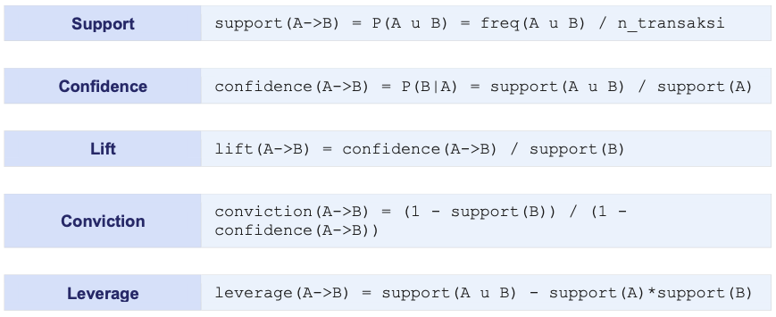
Interpretasi metrik:
- Support = seberapa sering kombinasi muncul
- Confidence = probabilitas beli B jika sudah beli A
- Lift > 1 = A dan B tidak independen (positif associated),
- Lift = 1 = independen
- Lift < 1 = negatif associated (saling menggantikan).
Kelebihan dan Kekurangan¶
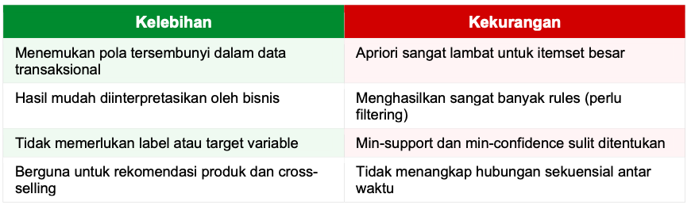
Contoh Kasus¶
Market basket analysis pada toko swalayan yaitu temukan produk yang sering dibeli bersama untuk strategi penempatan rak dan promosi bundling.
import pandas as pd
import numpy as np
from mlxtend.frequent_patterns import apriori, association_rules
from mlxtend.preprocessing import TransactionEncoder
# install: pip install mlxtend
# Data transaksi (daftar produk per transaksi)
transactions = [
['roti', 'mentega', 'susu'],
['roti', 'mentega'],
['roti', 'susu', 'telur'],
['mentega', 'susu', 'keju'],
['roti', 'mentega', 'susu', 'keju'],
['telur', 'susu'],
['roti', 'telur'],
['mentega', 'keju', 'susu'],
['roti', 'mentega', 'telur', 'susu'],
['keju', 'mentega'],
['roti', 'susu', 'keju'],
['telur', 'mentega', 'susu'],
['roti', 'keju', 'mentega'],
['susu', 'telur', 'roti'],
['mentega', 'roti', 'keju', 'susu'],
]
# Encode ke one-hot format
te = TransactionEncoder()
te_array = te.fit_transform(transactions)
df = pd.DataFrame(te_array, columns=te.columns_)
print('One-hot encoded transactions:')
print(df)
One-hot encoded transactions:
keju mentega roti susu telur
0 False True True True False
1 False True True False False
2 False False True True True
3 True True False True False
4 True True True True False
5 False False False True True
6 False False True False True
7 True True False True False
8 False True True True True
9 True True False False False
10 True False True True False
11 False True False True True
12 True True True False False
13 False False True True True
14 True True True True False
# Apriori: temukan frequent itemsets
frequent_items = apriori(
df,
min_support=0.4, # minimal 40% transaksi
use_colnames=True)
frequent_items['length'] = frequent_items['itemsets'].apply(len)
print(f'\nJumlah frequent itemsets: {len(frequent_items)}')
print(frequent_items.sort_values('support', ascending=False))
Jumlah frequent itemsets: 9
support itemsets length
3 0.733333 (susu) 1
2 0.666667 (roti) 1
1 0.666667 (mentega) 1
0 0.466667 (keju) 1
8 0.466667 (roti, susu) 2
7 0.466667 (mentega, susu) 2
4 0.400000 (telur) 1
6 0.400000 (mentega, roti) 2
5 0.400000 (keju, mentega) 2
# Generate association rules
rules = association_rules(
frequent_items,
metric='lift',
min_threshold=1.2)
rules = rules.sort_values('lift', ascending=False)
print(f'\nJumlah rules: {len(rules)}')
print('\nTop 5 rules berdasarkan Lift:')
cols = ['antecedents','consequents','support','confidence','lift']
print(rules[cols].head().to_string())
Jumlah rules: 2 Top 5 rules berdasarkan Lift: antecedents consequents support confidence lift 0 (keju) (mentega) 0.4 0.857143 1.285714 1 (mentega) (keju) 0.4 0.600000 1.285714
Interpretasi Output¶
- {roti, mentega} -> {susu}: confidence 0.8 = 80% pembeli roti+mentega juga beli susu
- Lift 2.1 = kombinasi ini terjadi 2.1x lebih sering dari yang diharapkan jika independen
- Support 0.4 = kombinasi muncul di 40% dari semua transaksi
- Conviction > 1 = aturan bukan kebetulan; Conviction = 1 = independen
Association Rule Mining adalah fondasi sistem rekomendasi awal. Aplikasi bisnis: produk dengan lift tinggi sebaiknya ditempatkan berdekatan di rak toko, ditawarkan sebagai bundling, atau direkomendasikan saat checkout. FP-Growth 10-100x lebih cepat dari Apriori dan direkomendasikan untuk dataset besar.
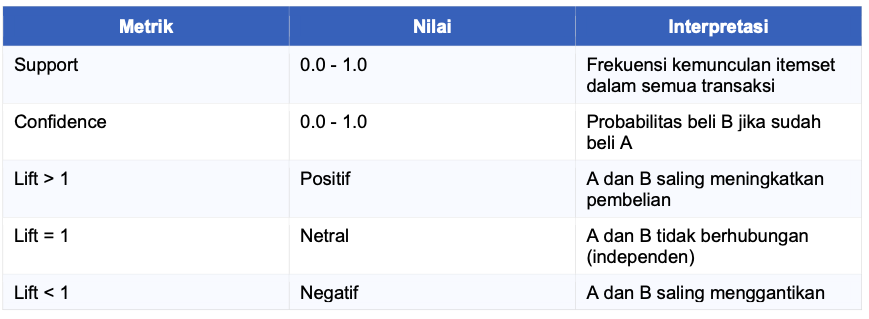
Pemilihan Algoritma Unsupervised Learning¶
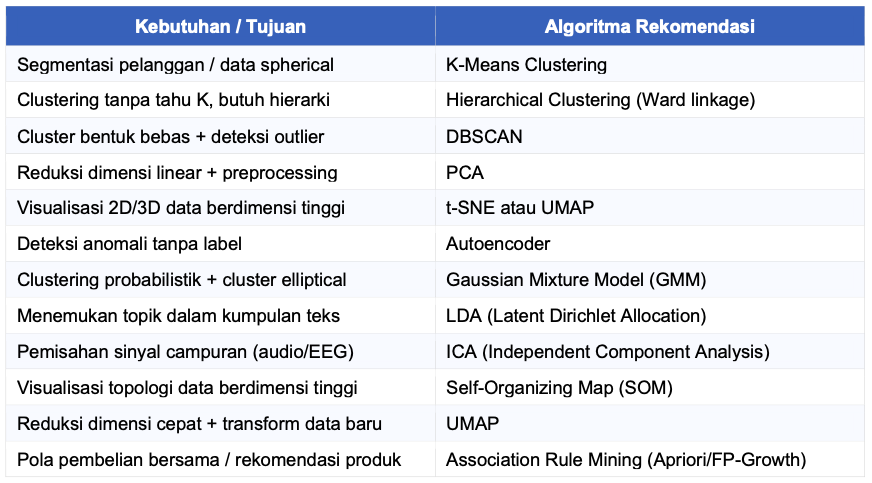